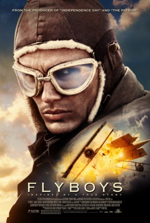
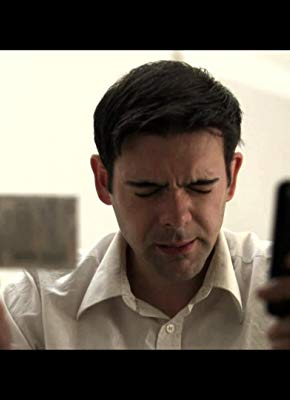

#9103 Flyboys - Helden der Lüfte
Alternativ: Flyboys
 
 IMDB-Wertung: 6.5 / 10
IMDB-Wertung: 6.5 / 10  Metascore: 0
Metascore: 0 
Before the United States enters World War I, some American youths volunteer for the French military. Subsequently, they become the first U.S. fighter pilots and form a squadron known as the Lafayette Escadrille, whose exploits and heroism become the stuff of legend. This fictional version follows a laconic Texas rancher, an eager Nebraska kid, a Black boxer already in France, and a New York swell, as they arrive green for training, get their baptism by fire when German planes ambush them on their first mission, and graduate to heroics. Rawlings, the Texan, falls in love with a young woman he meets at a brothel.
Jahr: 2006
Dauer: 138 Minuten
FSK: 12
Land: England Studio: 20th Century Fox GermanyTonspuren: DTS - ,
Untertitel:
Auflösung: 1080p (1920x816) Größe: 12288 MB
Genre: Action, Drama, Abenteuer, Krieg, Liebe, Geschichte
Regisseur: Tony Bill
Drehbuch: Phil Sears
Soundtrack: Trevor Rabin
Darsteller:
 James Franco als Blaine Rawlings
James Franco als Blaine Rawlings Mac McDonald als Sheriff Detweiller
Mac McDonald als Sheriff Detweiller- Philip Winchester als William Jensen
 Todd Boyce als Mr. Jensen
Todd Boyce als Mr. Jensen- Ruth Bradley als Laura
 Tim Pigott-Smith als Mr. Lowry
Tim Pigott-Smith als Mr. Lowry Tyler Labine als Briggs Lowry
Tyler Labine als Briggs Lowry- David Ellison als Eddie Beagle
 Jean Reno als Capt. Thenault
Jean Reno als Capt. Thenault Martin Henderson als Reed Cassidy
Martin Henderson als Reed Cassidy Lex Shrapnel als Grant
Lex Shrapnel als Grant- Jennifer Decker als Lucienne
- Christien Anholt als Higgins
- Pip Pickering als Nunn
 Michael Jibson als Lyle Porter
Michael Jibson als Lyle Porter- Daniel Rigby als Ives
- Adrien Boublil als Luc
 Jake Canuso als French Infantryman
Jake Canuso als French Infantryman- Ralf Rueller als German Soldier (uncredited)
-  Stephen Samson als British Pilot (uncredited)
- John R. Walker als French Army Captain (uncredited)
- Scott Hazell als Cinema Usher
- Karen Ford als Mrs. Jensen
- Abdul Salis als Eugene Skinner
- Jean-Philippe Écoffey als Skinner's trainer
- Gail Downey als Mrs. Lowry
- Augustin Legrand als L.T. Giroux
- Keith McErlean als Vernon Toddman
- Shaka als Whiskey - the Lion
- Christopher Snell als Bartender
- Kate Robbins als Clarise
- Barry McGee als Dewitt
- Gunnar Winbergh als The Black Falcon
- Ian Rose als Wolfert
- Kyle Hensher-Smith als Jacques
- Lauren Downing als Marie
- Hayley Downing als Marie
- Eric Seror als Doctor
- Martin Alexander als British Pilot
 Lasco Atkins als German (uncredited)
Lasco Atkins als German (uncredited)- Robert Dearle als Sheriff (uncredited)
- David Furlong als Crewman (uncredited)
- Daniel Johnston als English soldier (uncredited)
Datei: X:\2006(A-F)\Flyboys - Helden der Lüfte (2006, FSK12, 1920x816).mkv seit 19.07.2018
Festplatte: HD 2005(G-Z)-2006(A-Z)
 Es gibt insgesamt 56 Filme in der Gruppe '2006(A-F)'
Es gibt insgesamt 56 Filme in der Gruppe '2006(A-F)'